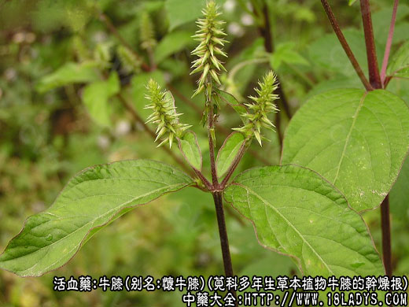
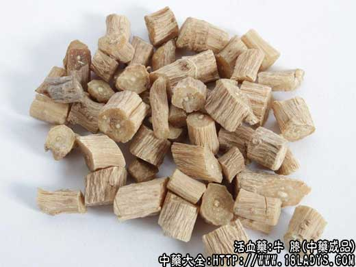
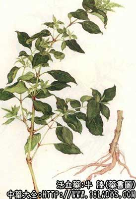
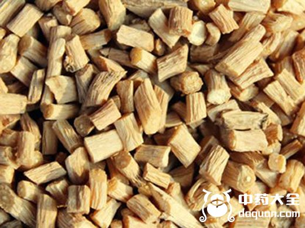
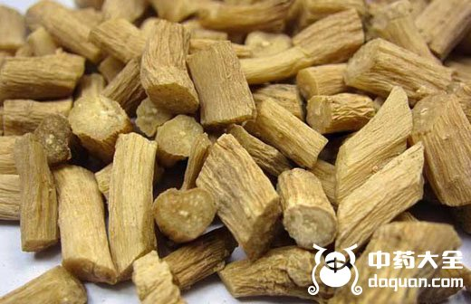
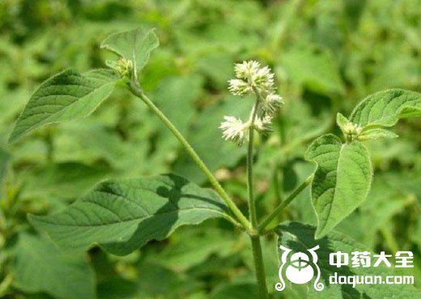

本品为常用中药。始载《神农本草经》，列为上品。陶弘景说：“其茎有节，象牛膝”，故名。商品分怀牛膝及川牛膝两类。它具有镇痛、兴奋子宫、利尿、解痉、降压的作用，下面中药师宁宁为大家分享牛膝图片以及功效与作用。

牛膝图片源植物

牛膝图片 中药材

别名：牛膝、牛夕。
来源：为苋科多年生草本植物牛膝的干燥根，多为栽培。
产地：主产于河南沁阳、武陟，现各地引种栽培。

性状鉴别：根细长圆柱形，长30～100厘米，直径0.2～1厘米，外皮肉红色或土黄色，具细微纵皱纹，有横长皮孔及少数须根痕。质坚略有韧性。断而角质样，有多数由维管束形成的筋酸点，中心有黄白色的木质心，气特殊，味微甜而涩。
以根条粗长，肉红色，皮细坚实者为佳。
别名：拐夕、杜牛夕。
来源：为苋科多年生草本植物川牛膝的干燥根，栽培或野生。
产地：栽培品主产于四川雅安、温江、乐山等地，野生品主产于贵州的水城、织金、纳雍、云南亦产。

性状鉴别：根圆柱形多扭曲，根头部多膨大，上粗下细形似拐杖，故拐膝之名。长短不一，约30～60厘米，直径1～2厘米。表面灰褐色，具纵皱纹及横长皮孔，带有细支根及须根痕。质贱人，断面黄褐色，显纤维性，散生维管束小点继续排列成数圈。气特殊，味甜微苦。
以根细，分歧少，体柔韧，纤维少者为佳。
主要成分：怀牛膝含皂甙，并含牛膝甾酮。川牛膝含异怀苋甾酮等。
散瘀止痛、活血通经、补益肝肾，现已证实其作用为：
1、镇痛，动物实验证明有一定镇痛作用。
2、兴奋子宫，能加强子宫收缩。
3、利尿，作用较轻微。
4、解痉，对胃肠运动有轻度抑制作用。
5、降压，与扩张血管有关，但作用短暂，不能作为有效的降压药用，治高血压时需要配其他药物。
炮制：坏牛膝切咀，川牛膝切片。
性味：苦、酸、平。
归经：入肝、肾、膀胱经。
功能：补肝肾，强腰膝，破血行瘀。
主治：肝肾不足之筋骨酸软，腰膝疼痛，经闭瘀血，风湿疼痛。
怀牛膝偏于滋补肝肾，治腰酸腿软无力；川牛膝偏于破瘀通经，治瘀血，经闭等，并有降压作用。

前人经验取牛膝性善下行，而治疗一系列病症。所谓“下行”，大致是指：
1、使用月经通畅、小便通利、大便易泄，易于向下排出;
2、使头部和上半身血液“下行”，从而减轻头部充血;
3、作为药引，引导其他药的药力“下行”到达下半身，治下半身疾患。
根据以上性能，牛膝常用于治疗下列病症：
1、治腰腿疼痛，无论腰腿痛原因属肾虚、风湿或跌打损伤，牛膝都是常用之药。
对肾虚腰痛，牛膝有补益作用，但须加配杜仲、狗脊、续断、桑寄生等药，以加强补力，也可用虎潜丸。
对风湿腰腿痛，牛膝能引药下行，加强祛风、祛湿、止痛作用，常配络石藤、海桐皮、萆薢、苍术等。
对跌打损伤腰腿痛，牛膝能活血散瘀，但须加配其他活血药和补益肝肾药，方如跌打腰痛散。
2、治淋症，前人的经验说“牛膝淋症要药”。但实际上主要用于治疗淋症而有血尿和腰痛者，如石淋(尤其适用于肾结石)，故肾石方中用牛膝作为辅助药。至于热淋(如尿道炎)有小便困难、尿痛，可用牛膝配当归，黄芩等，方如牛膝汤。
3、治气血瘀滞而致的经痛、经闭、经行后期，取其有收缩子宫和镇痛作用，祛瘀通经，常配四物汤和肉桂、党参等，把调经和调补气血结合起来。
4、治风湿痹痛，不仅能治风湿腰痛，且对四肢风湿痛也适用，常配海风藤、独活、鸡血藤等同服。
5、治高血压：属肝阳上亢者，有头痛、头晕、眼花，以本品与杜仲、磁石、钩藤、白蒺藜等配伍，方如平肝降压汤。此方也可用于脑血管痉挛引起的头痛。
6、治齿龈肿痛，由虚火上炎引起的较适用(如牙周病)，前人谓取其能引血下行，减轻头部血热，方如加味清胃散，或用牛膝30g、生地30g、代赭石3-g，水煎服。
使用注意：1、牛膝性滑，凡有遗精、脾虚泄泻、崩漏，或孕妇等，均不宜用；2、牛膝生用破血行瘀较好，熟用补益力较强；3、牛膝在商品上怀牛膝（主产于河南怀庆）和川牛膝之分；习惯上认为怀牛膝长于补益肝肾，兼能舒筋健骨，川牛膝长于活血散瘀，兼能宣通关节，但实际上两者功用大同小异，用药不一定严格区分。
用量：6～15g，大剂可用至30g。
处方举例：
1、跌打腰腿痛散：川牛膝、杜仲、川续断、乳香、没药、宣木瓜、麻黄、马钱子各18g，共研为细末，每次服3g，温开水送服。此方不宜多服，痛减后应停用。
2、牛膝汤(《证治准绳》)：牛膝、当归、黄芩各等分，共研分，每次6g，水煎服。
3、平肝降压汤：怀牛膝15g、白蒺藜15g、钩藤9g、代赭石30g、龙骨15g、牡蛎15g、白芍12g、元参12g、天冬6g、甘草3g，水煎服。
4、加味清胃散：丹皮6g、生地15g、当归6g、川连3g、牛膝6g、生甘草3g，水煎服。
注：1、怀牛膝为河南特产四大怀药之一（古代武陟、沁阳属怀庆府）。四川、贵州、江西等地有野生，一般条短而硬分歧多，油性小，味苦麻。
2、川牛膝品种较多，性状气味差异较大，常见的有下述几种。
（1）麻牛膝：四川、云南野生品，为苋科植物头花葸草（金河牛膝）的干燥根。根条长圆锥形或圆柱状锥形，一般较川牛膝短，上下两端粗细差异较大，表面皮孔明显，多扭曲，易折断。味微甘后极苦而麻，京津不习销。
（2）怀牛膝（柳叶牛膝）：四川、云南、贵州野生或栽培（栽培者条大，野生者条小），根条圆柱形，弯曲，有时分歧，长可达79厘米，直径0.7～1.3厘米，上端有切去芦头的痕迹。外皮土黄色，有细顺皱纹，并有须根痕迹。质柔软，肉实，易折断，断面黄白色至淡棕红色，微带有纤维性，味甜。
（3）味牛膝：别名，末膝、杜牛膝（上海）、尾膝、老鸹窝（天津）。主产于四川巫溪、奉节及湖北省。为爵床科植物大马兰的干燥根。当地名野生膝或土牛膝，仅部分地区使用，并外销东北及出口。根茎粗大，多分歧，盘曲结节，有多数茎基残留。须根丛生，为细长圆柱形，长可达50厘米，直径1～6毫米。表面暗灰色，平滑无皱纹，皮部质脆，带粉性，常有环形的断节裂缝，有时剥落露出木心。木心质坚韧，不易折断，断面皮部灰白色，木质部暗灰色，味淡。
结语：云南还产有白牛膝，为石竹科植物狗筋曼的根，当地民间使用，外地不销。
了解更多理血的中药，还为您推荐↓↓↓↓